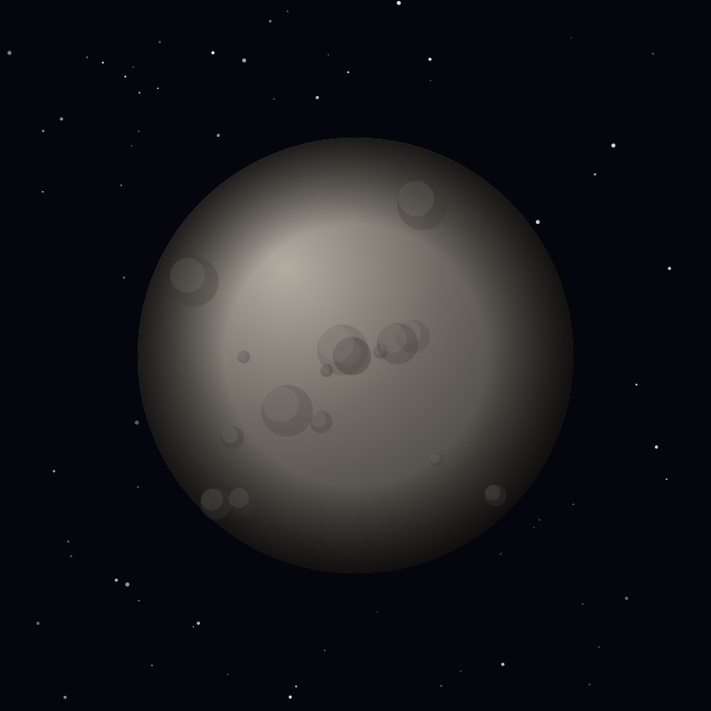

Planet
Mercury
The smallest planet and the closest to the Sun, a cratered world of rock with no atmosphere to soften its swings from scorching to freezing.
Object 04 of 26

Key facts
- Distance from Earth
- 77 million km (closest)
- Radius
- 2,440 km (smallest planet)
- Mass
- 3.30 × 10²³ kg
- Surface gravity
- 3.70 m/s² (38% of Earth)
- Orbital period
- 88 days
- Surface temperature
- -173°C to 427°C
- Atmosphere
- Exosphere (sodium, oxygen)
- Moons
- None
Overview
Mercury is the smallest planet and the closest to the Sun, completing an orbit every 88 days. It has no substantial atmosphere, so its surface is exposed to the full extremes of space — a swing of about 600°C between day and night.
Its rotation is locked in a 3:2 spin-orbit resonance: Mercury turns exactly three times for every two orbits. Combined with its slow rotation, this means a single solar day — sunrise to sunrise — lasts 176 Earth days, two full Mercury years.
Surface
Mercury's surface looks much like the Moon's: heavily cratered, with no atmosphere to erase the scars. The largest feature is the Caloris Basin, an impact crater 1,550 kilometres across whose name means 'heat' because the Sun once pointed directly into it.
Close inspection shows long cliffs called lobate scarps, wrinkles in the crust left as the planet's large iron core cooled and the whole world contracted by as much as 7 kilometres. Radar observations of polar craters that never see sunlight reveal water ice buried in permanent shadow.
Magnetosphere
Mercury is the only rocky planet besides Earth with a global magnetic field, though it is just 1 percent as strong. It is generated by a still-convecting part of the planet's enormous iron core, which makes up roughly 85 percent of the planet's radius.
The weak field interacts violently with the solar wind, filling Mercury's thin exosphere with sodium, calcium and oxygen stripped from the surface and producing bright tails that stream away from the Sun.
Exploration
Mariner 10 made the first flybys in 1974-75, mapping about 45 percent of the surface before the instrument failed. MESSENGER became the first spacecraft to orbit Mercury in 2011, completing global mapping and confirming the polar ice.
ESA and JAXA's BepiColombo arrived in the Mercury system in 2026 and will enter orbit after a series of flybys, carrying a much larger instrument suite to study the interior, surface and magnetic environment together.